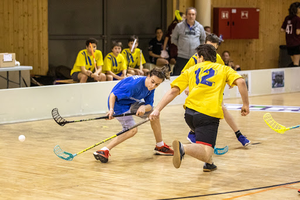

| Film/Sorozat nézés | Kirándulás | Kártyajátékok | Floorball |
|---|---|---|---|
|  |
A hobbi a szabadidőben végzett, pihenést, kikapcsolódást szolgáló, örömöt szerző tevékenységek. Egyes hobbitevékenységek egyben gazdasági haszonnal is járhatnak.
Általában az embereknek hobbija, mert érdeklődik iránta vagy örömszerzés miatt, de nem anyagi indokokból, bár vannak olyan hobbik is, amikkel pénz is lehet keresni, ha arra specializálódott hobbit keresünk. Az elmélyülten végzett hobbitevékenységnek következménye lehet, hogy valaki alapos ismeretekre, jártasságra és készségre, tudásra és tapasztalatra tesz szert egy vagy több területen. A stressz levezetésében is segíthet vagy akár fizikailág és szellemileg fejlődni, ha talál az ember egy új hobbit.
ECDL feladatok